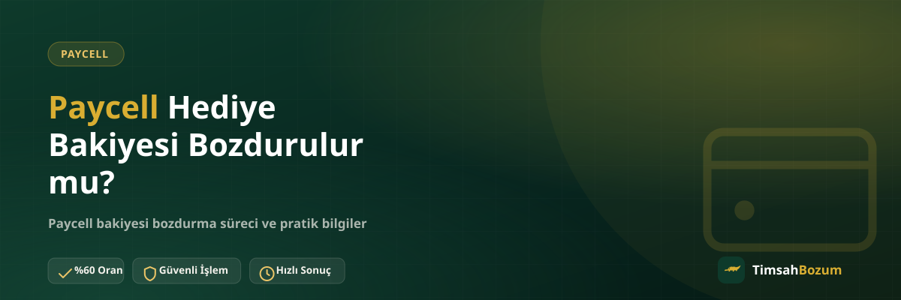

Bir yakınının gönderdiği, bir kampanyadan kazandığın veya bir uygulama ödülü olarak cüzdanına yansıyan Paycell bakiyesi, "bu bakiyeyi de normal bakiye gibi bozdurabilir miyim" sorusunu akla getiriyor. Özellikle ilk kez hediye bakiye alan kullanıcılar, bu bakiyenin farklı bir kategoriye girip girmediğini merak ediyor. Bu yazıda hediye yoluyla gelen Paycell bakiyesinin bozum açısından ne ifade ettiğini ve süreci nasıl işlediğini anlatıyoruz.
Hediye Bakiyesi ile Kendi Yüklediğin Bakiye Arasında Fark Var mı?
Paycell cüzdanı, bakiyenin hangi yoldan geldiğini ayrıca etiketlemez. Bir arkadaşının gönderdiği tutar, bir kampanya sonucu hesabına yansıyan bakiye veya kendi yüklediğin tutar, cüzdan ekranında tek bir toplam olarak görünür. Bozum işlemi de bu ekranda görünen güncel bakiyeyi esas alır; bakiyenin kaynağını sorgulamaz.
Bu yüzden "hediye bakiyesi" ayrı bir statüye sahip değildir. Önemli olan tek şey, bakiyenin cüzdanında görünür ve senin erişiminde olmasıdır.
Hediye Bakiyesi Bozdurmak Güvenilir mi?
Süreç, bakiyenin kaynağından bağımsız olarak aynı adımları izler: güncel bakiyeni gösteren bir ekran görüntüsü paylaşırsın, oranı WhatsApp üzerinden teyit edersin, onay sonrası ödeme görüşülen yöntemle yapılır. Üyelik, form doldurma veya kimlik belgesi istenmez; cüzdanına erişim de talep edilmez. Tüm süreç yalnızca resmi WhatsApp hattımız üzerinden (+90 543 887 21 71) yürür.
Hediye Bakiyesinin Tamamını mı Bozdurmam Gerekiyor?
Hayır. Paycell bakiye tabanlı bir hizmet olduğu için kısmi bozum mümkündür. Hediye yoluyla gelen bakiyenin de tamamını bozdurmak zorunda değilsin; istediğin tutarı belirtip kalanını cüzdanında bırakabilirsin. Bu, kod tabanlı hizmetlerden (Razer Gold, iTunes gibi) ayrılan bir özellik; kod tabanlı hizmetlerde kodun tam değeri tek seferde bozdurulurken, bakiye tabanlı Paycell'de istediğin kısmı seçebilirsin.
Hediye Bakiyesi Bozdururken Hangi Bilgi Gerekir?
İşlem için tek ihtiyacın, cüzdanındaki güncel bakiyeyi gösteren, tutarın net okunduğu bir ekran görüntüsü. Bakiyenin hediye yoluyla geldiğini ayrıca açıklamana gerek yok, çünkü süreç ekranda görünen rakam üzerinden ilerliyor. Görüntünün güncel tarihli ve okunaklı olmasına dikkat etmek, gereksiz bilgi tekrarının önüne geçer.
Hediye Bakiyesi Bozdurma İşlemi Ne Kadar Sürer?
Süreç, diğer Paycell bozum işlemleriyle aynı aşamalardan oluşur: WhatsApp'tan bilgini paylaşman, oranı teyit etmen ve onay sonrası ödemenin yapılması. Süreyi belirleyen asıl etken paylaşılan bilginin eksiksiz ve güncel olması; net bir rakam vermek yerine güncel bilgiyi WhatsApp'tan teyit etmek en doğru yaklaşım.
Hediye Bakiyesi Bozdurma İşlemi Neden Gecikebilir?
Bakiyenin cüzdanda henüz görünmemesi, ekran görüntüsünün eski bir tarihe ait olması veya bakiyeye artık erişimin olmaması gibi durumlar süreci geciktirebilir. Hediye bakiyesi de dahil olmak üzere bozum için temel şart, bakiyenin görünür ve erişilebilir olmasıdır; bu şart sağlanmadan işlem ilerlemez.
Hediye Bakiyesinin Kaynağını Kanıtlamam Gerekir mi?
Hayır. Bozum süreci için bakiyenin hangi kampanyadan, hangi arkadaştan veya hangi ödülden geldiğine dair bir belge veya açıklama istenmez. Tek şart, cüzdanındaki güncel bakiyenin görünür olması; bakiyenin kökenini kanıtlaman beklenmez. Bu, işlemi senin için basitleştirir ve sürecin uzamasını önler.
Cüzdanında Birden Fazla Kaynaktan Bakiye Birikmişse Ne Olur?
Bazı kullanıcıların cüzdanında hem kendi yüklediği bakiye hem de hediye yoluyla gelen tutar birlikte bulunabilir. Bu durumda ikisi tek bir toplam bakiye olarak ekranda görünür ve bozum işlemi bu toplam üzerinden değerlendirilir. Hangi kısmın hediye, hangi kısmın kendi yüklemen olduğunu ayırt etmene gerek yok; paylaşman gereken tek bilgi, o anki güncel toplam tutar.
WhatsApp'ta Durumu Nasıl Anlatmalıyım?
"Cüzdanımda hediye bakiye var, bunu bozdurmak istiyorum" cümlesi ve güncel ekran görüntüsü, süreci başlatmak için yeterli. Bakiyenin nereden geldiğini ayrıntılı anlatmana gerek yok; ekranda görünen tutar ve bozdurmak istediğin miktar netse işlem hızlıca ilerler.
Hediye Bakiyesi Cüzdana Yansımadan Bozdurulabilir mi?
Bozum işleminin başlayabilmesi için bakiyenin cüzdanında görünür hale gelmiş olması gerekir. Bir arkadaşının gönderdiğini söylediği ama henüz cüzdanına yansımamış bir tutar, ekranda görünmediği sürece bozum sürecine dahil edilemez. Bu yüzden hediye bakiyesi gönderildiyse önce cüzdana işlendiğinden emin olmak, ardından ekran görüntüsünü almak en doğru sıralama olur.
Bakiyeyi Gönderen Kişi Sürece Dahil Olmalı mı?
Hayır. Bakiye cüzdana geçtiği andan itibaren senin bakiyen haline gelir ve bozum sürecini yalnızca sen, güncel ekran görüntünü paylaşarak yürütürsün. Bakiyeyi gönderen kişinin işleme ayrıca katılmasına veya onay vermesine gerek yoktur; süreç tamamen cüzdan sahibi olarak senin üzerinden ilerler.
Hediye Bakiyesini Hemen mi Bozdurmalıyım?
Hediye bakiyesini ne zaman bozduracağına tamamen sen karar verirsin; bakiyenin cüzdanında bir süre beklemesi işlemi engellemez. Önemli olan, işleme başladığın anda ekranda görünen bakiyenin güncel ve doğru olmasıdır. Uygun bulduğun zaman güncel ekran görüntünle süreci başlatabilirsin.
Hediye Bakiyesi Puan veya Cashback'ten Farklı mı?
Paycell cüzdanında bazen kampanya puanı, cashback veya iade tutarı gibi farklı isimlerle anılan girişler de görülebilir. Bu tutarlar cüzdandaki güncel bakiyeye yansıdığı ve kullanılabilir hale geldiği sürece, hediye bakiyesiyle aynı mantıkla değerlendirilir; bozum işlemi, adlandırmadan bağımsız olarak ekranda görünen toplam bakiyeyi esas alır. Henüz cüzdana işlenmemiş, "yakında yüklenecek" durumundaki bir puan veya iade içinse aynı kural geçerlidir: bakiye görünür hale gelmeden süreç başlatılamaz.
Hediye bakiyeni değerlendirmek için güncel ekran görüntünle WhatsApp hattımıza yazarak süreci başlatabilirsin.
İlgili Yazılar
- Paycell Bakiyesi Bozdurmanın Güvenli Yolu
- Paycell Bakiyesi Nasıl Oluşur, Nereden Gelir?
- Pokus Hediye Bakiyesi Bozdurulur mu?